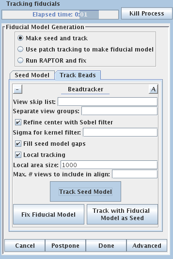
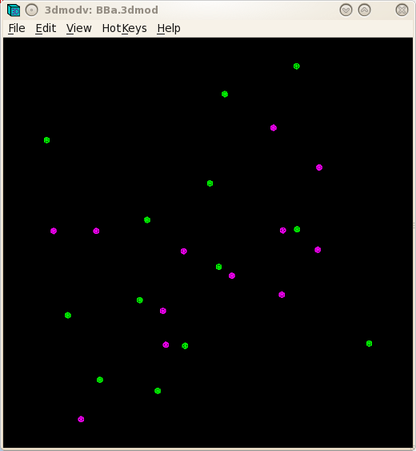
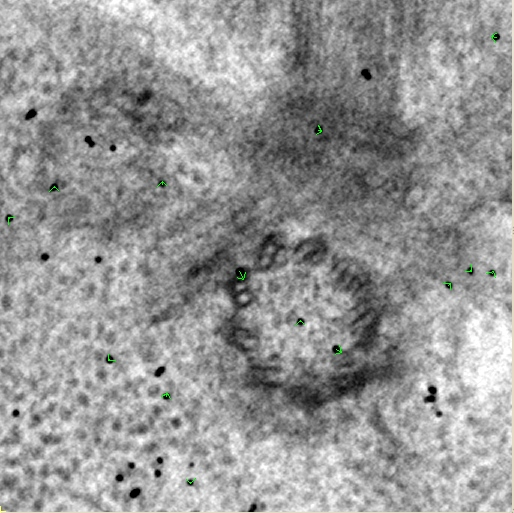
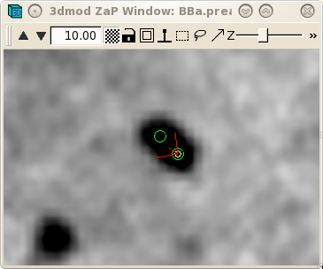
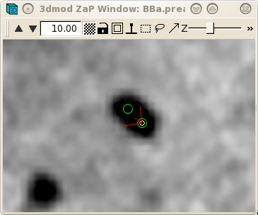
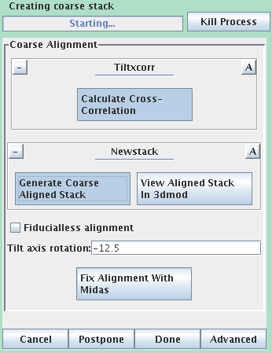
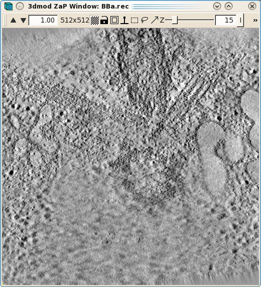
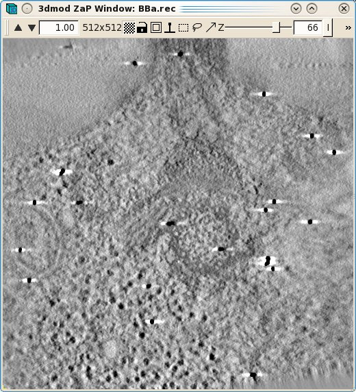
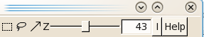
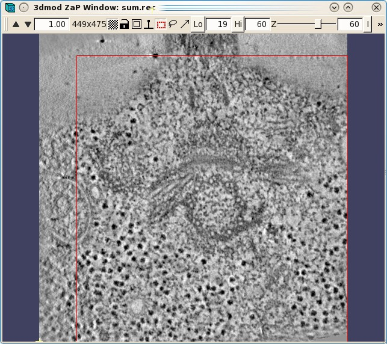

This tutorial contains a small, dual-axis sample data set and a step-by-step
guide to eTomo. The tutorial is not meant to be a replacement for the
Tomography Guide. Please refer to the more comprehensive
Tomography Guide for additional detail about each step. The sample data
set was chosen because you should get through the entire process with no
problems! The Tomography Guide is a good reference for trouble shooting and
learning more about the many programs that are used for computing dual-axis
tomograms.
There are a number of new features in IMOD 4.7 that are illustrated in this
version of the tutorial. If you do not have IMOD 4.7 installed, you
should either upgrade to it, or enter imodhelp
in the terminal and select the eTomo Tutorial that comes in your installed
version.
To get started, download the sample data set from our web site. Unpack the data by typing:
tar -xzf tutorialData.tar.gz
This will create a directory, tutorialData,
containing the two raw stacks needed to start the tutorial, named BBa.st and
BBb.st, respectively. There is also a subdirectory, finalFiles,
containing all of the small working files left after completing the data set,
as well a copy of the final reconstruction.
To start eTomo, type:
etomo
When eTomo is first started, a Front Page panel will come up (shown
above), allowing you to select what operation you want to perform with
eTomo. At this point you can either start working on a new data set by
pressing the Build Tomogram button or open an existing data set under
the File and Recent Projects menus.
Press Build Tomogram and the Setup Tomogram panel will come up (shown above). A Project Log window will also open that will contain a history of actions and report useful log file solutions specific to particular steps.
To start working on a new data set, the following fields must be filled out. The Dataset name is the name of the file containing the raw, tilt series (or the root_namea.st if a dual axis data set was collected). You can enter the Dataset name by clicking on the yellow file selection button associated with the Dataset name field, or type in the directory path and file name directly in the field. The Backup directory is an optional field to save small working files every time you run a procedure. This field can be left empty if you don't wish to use a backup directory.
In the Templates box, select the plasticSection.adoc System template. This template is part of the IMOD installation and it can be used to set some parameters that are appropriate for this kind of reconstruction.
Select whether the data set is Single axis or Dual axis. The Montage option is available for processing montaged tilt series.
The next fields specify Pixel size (nm), the size of gold Fiducial diameter (nm) and Image rotation (degrees). Pixel size (in nm) is dependent on the microscope, camera, and magnification. The Image rotation (tilt axis angle from vertical, in degrees) will also vary based on the microscope and magnification. Pressing the Scan Header button will retrieve the Pixel size and Image rotation values if these are specified in the MRC file header. For this tutorial example, press Scan Header to define the pixel size for this data set (2.02) and Image rotation (-12.5). You must specify the size of the gold Fiducial diameter (10 nm).
If the Parallel Processing checkbox is enabled, uncheck it so that your screen will look the same as the ones shown here. Parallel processing, which is not covered in this tutorial, allows some processes to be distributed across multiple computers or to multiple processors on one computer (see Using eTomo for information on how to activate it). Leave the Image distortion field file entry blank. This feature can be used to correct for nonlinear image distortions if they have been measured and characterized, which is particularly useful with data from an energy filter. Leave the Mag gradient corrections entry blank. This feature contains a file with magnification gradients to be applied for each image, which is useful for use with montage data.
Specify the source of the tilt angles for either one or both axes, as appropriate in the Axis A and, if necessary, the Axis B box(es). In this example, tilt angles are stored in the extended header and so the default Extract tilt angles from data should be used. If you are reconstructing a tilt series that was taken in two directions from zero degrees, you can turn on Series was bidirectional from, and this will take care of setting some appropriate alignment parameters. You can also optionally specify individual projections to exclude from processing steps. The syntax for this exclude list is a comma separated list of ranges (i.e. 1,4-5,60-70). Notice that there is a also a button in this section to open the raw data file for viewing in 3dmod.
It is useful to look at the raw tilt series files in order to make decisions about preprocessing steps or to see if there are any particular views that have poor image quality, and that you want to exclude from the alignment and reconstruction.
To determine if you have views that have poor image quality (poor focus, etc.), open the raw stack(s) by pressing the View Raw Image Stack button(s). Movie through the raw tilt series images by clicking the middle mouse button. Notice how the images jump around slightly. Make note of any particular views that you want to exclude from the alignment and reconstruction. In this sample data set, there are no images that need to be excluded.

Details specific for the tutorial sample data set are shown above. For this sample data set, the Dataset name is BBa.st; it is a dual axis set. The pixel size is 2.02 nm, the fiducial diameter is 10 nm and the image rotation is -12.5 degrees. Tilt angles for this data set are stored and extracted from the data file.
Press the Create Com Scripts button to move on to generating the tomograms.
If you need to exit eTomo before finishing this tutorial, you can continue
where you left off by going to the tutorialData
directory, which now contains your dataset, and typing:
etomo BB.edf
The Main Window consists of several areas: on the left is a column of buttons
(Process Control Buttons) that allow you to select a particular stage of
tomogram computation to work on. On the top is a Process Monitor that informs
you of the status of the current process or the last process completed. To the
left of the Process Monitor are the Axis Buttons which allow you to move
between Axis A and Axis B. The Main Window is currently open to Axis A
The Process Control Buttons are arranged in the suggested order of processing from top to bottom. The buttons are color coded to signify the stage of the process, where red indicates that the process has not been started, magenta indicates that the process is currently in progress, and green indicates that the process has been completed. When one of the buttons is selected, the right side of the window will fill in with information and fields associated with a specific process. These forms are referred to as Process Panels. They allow you to modify the necessary parameters and execute specific programs required by that processing step. The parameters and buttons on each Process Panel are typically laid out from top to bottom in the order they should be executed, much like a flow chart. When you execute a process (by pressing a button on one of the Process Panels) the Process Monitor will indicate what the process is doing and when it is complete.
If images were collected on the microscope using a CCD camera, random x-rays hitting the CCD camera during collection of the initial dark reference or individual images can cause extreme high or low pixel values in your data file. As a result, these extreme values ruin the contrast and can cause artifacts in the reconstruction. The example in this tutorial does not have any extreme pixel values that would cause such problems . However, the procedure for removing these pixel values is outlined here to give you a sense of the steps involved. First, a quick way to determine if your file does have extreme pixel values is to look at the Minimum and Maximum Density values in image header of the raw stack. To do this, go to the command line terminal and type:
header BBa.st
Notice the minimum, maximum, and mean density values. If the minimum density value is a negative number or 0, then you probably have an extreme black pixel in your data set, caused by an x-ray event during collection of the dark reference. If you have a high maximum density, then you have an extreme white pixel in your data set. If extreme values are lurking somewhere in the data set and a preprocessing step is needed to remove them, then you would press the Pre-processing button to open this panel:
The basic steps involved in pre-processing (again, not needed for the tutorial data set) are:
Press the Show Min/Max for Raw Stack button to run clip stats, a program which displays the minimum and maximum densities for each section, on the raw stack. Windows will open with the text output and with a graph of these densities.
Press the Create Fixed Stack button to create a second stack with X-rays removed.
Press the View Fixed Stack button to view that stack, and press the Show Min/Max for Fixed Stack button to run clips stats on the fixed stack. Check to see if the extreme pixel values have been corrected.
If the contrast appears good in the display without the Black and White sliders in 3dmod being very close together, and the outliers from the raw stack clip stats output are gone from the fixed stack output, then press the Use Fixed Stack button.
For details on this operation, refer to the PRE-PROCESSING: REMOVING X-RAYS section of the Tomography Guide.
Press the Coarse Alignment Process Control Button to proceed with creating a coarse-aligned stack.


Pressing the Calculate Cross-Correlation button runs the program,
Tiltxcorr. The program uses cross-correlation to find an initial translational
alignment between successive images of a tilt series (i.e. just shifts in x and
y). The output file, BBa.prexf, contains a list of transforms (or recommended
shifts) that will be applied to the image data in the next step.

Pressing the Generate Coarse Aligned Stack button will run 2 programs. Xftoxg takes the transforms created by Tiltxcorr to obtain a single consistent, or 'global' set of alignments. These new transforms are then applied to the image data using the program Newstack. The output file created is BBa.preali. One can view the prealigned stack by pressing the View Aligned Stack in 3dmod button. Large image shifts can be edited manually using the the interactive program, Midas. This is not an issue with this data set; see the COARSE ALIGNMENT section of the Tomography Guide for details. The Tilt axis rotation entry is used if Midas is run, because Midas will rotate images so that the tilt axis is vertical. The Fiducialless alignment check box can be selected for making a tomogram without a fiducial alignment; see Making a Quick Tomogram with Correlation Alignment in the Tomography Guide for details. Once you are satisfied with the prealigned stack, press the Done button to proceed to the next step.

There are three options available to generate a fiducial model. The most common is to Make seed and track a number of gold fiducial markers, where the starting points can be selected either manually or automatically. These starting points are referred to as a seed model because they are picked on only one section, and the fiducials are tracked from there. The option, Use patch tracking to make fiducial model, can be used if the data set does not contain gold fiducial markers or too few gold fiducials. Run RAPTOR and fix will use a program developed at Stanford to automatically find and track gold fiducial markers through the tilt series. See the FIDUCIAL MODEL GENERATION section of the Tomography Guide for details. We are first going to select seed points automatically, using a new feature in IMOD 4.7. Then we will back up and go through the older method, which is better for illustrating the procedures you would need to follow with more problematic data sets.
Select the Generate seed model automatically radio button to open the automatic seed finding panel, enter 25 for the Total number to track, and turn on Select beads on two surfaces.
Select the Track Beads tab.

This will run the Beadtrack program to find the gold on all other sections. The output file created by tracka.com is BBa.fid, which is the completed fiducial model. This computer-generated model is not perfect, and gaps in the fiducial model can occur. A report of the total points missing will be indicated in the Project log window. If a large number of points are missing, press the Track with Fiducial Model as Seed button, which will rerun the tracking program with the fiducial model as the seed. If points are still missing, the next procedure involves an iterative process to edit this fiducial model. Note, that it is not necessary to fill all the gaps, particularly if there is a good excess of fiducial points, as there is here. However, it is important to make sure that the large majority of the fiducials are tracked all the way to the two ends of the tilt series.

This procedure will open the prealigned stack (BBa.preali) and the fiducial
model file (BBa.fid) in 3dmod.


The Bead Fixer dialog box will come up in Fill gaps mode. The Bead Fixer facilitates editing the fiducial model.
Hit 'Go to Next Gap' by clicking on the button using the left mouse button, or by using the spacebar as a hot key. This will attach to a point (highlighted with a yellow circle) that has a missing model point on an adjacent section. Use the Page Up key (when an up arrow appears above the point) or the Page Down key (when a down arrow appears above the point) to find the section with the missing point and use the middle mouse button to add the point in the center of the gold particle. It is useful to increase the magnification of the image with the '+' key and adjust the contrast on the sections, especially at high tilt.
Repeat 'Go to Next Gap' until the message, 'No more gaps found' comes up in the main 3dmod window. Save the model file by going to File -> Save model, or by hitting the hot key 's', and press the Done button to advance to the fine alignment step.
The Fine Alignment panel is organized with a set of three tabs to solve for various alignment parameters. A general alignment is first done by pressing the Compute alignment button at the bottom of the Fine Alignment box.

This command file runs the program, Tiltalign, to solve for the displacements,
rotations, tilts and magnification differences in the tilted views. The program
uses the position of the gold particles in the fiducial model and a variable
metric minimization approach to find the best fit. It creates a log file that
gives a synopsis of what was done. A report of the Ratio of total values to all
unknowns and the residual error mean and sd is displayed in the Project Log
window. To access the full log file, right click the mouse cursor over the
window region associated with the process. This will open a menu that is split
into three or four sections: the first section will allow you to open the log
files associated with the current process; a second section allows you to see
graphs of alignment parameters, but is not present on most other panels; the
next section will allow you to open up the man pages associated with the
current processes, and the final menu section opens the general help guides.
Select "Align axis:a log file" to open the log file. This
will open a tabbed file that contains the complete log and short sections from
this log file. In my example, the first Compute Alignment run gave a
Residual error mean of 0.239.

This result is too good for illustrating further steps, so now we are going to back up. First, go to the terminal window and remove or rename the seed mode, for example:
mv
BBa.seed BBa_auto.seed
Next, in eTomo, press the Fiducial Model Gen. button on the left, select the Seed Model tab, and switch back to Make seed model manually so that the screen looks like this:
(This button was originally labeled 'Seed Fiducial Model' before any model was created.) This will open BBa.preali in 3dmod and create an empty model file named BBa.seed. It will also bring up the Bead Fixer dialog box in Make seed mode with Autocenter checked. Check Automatic new contour if it is off; 3dmod will remember this setting from session to seesion.

3dmod will open the file to the middle section (section 31 in this tutorial stack). You can return to the middle section by pressing the Insert key on your keyboard.

In the Zap (image) window, place a model point in the center of 20-30gold particles by centering the cursor in the middle of the gold particle and pressing the middle mouse button. Because Automatic new contour is checked, a new contour for each new gold bead will be created. Because Autocenter is checked, 3dmod should make sure that the model point is positioned in the center of the gold bead, so you do not need to be as careful as when filling gaps. In my example (BBa.seed) I selected 25 gold particles; the model contains 1 object, 25 contours, with each contour having 1 point. Save this seed model.
Next, select the Track Beads tab again. In order to keep the result from being so good this time, turn off Refine center with Sobel filter.
Press Compute Alignment. This time the
residual error is quite a bit bigger.
The goal of the fine alignment step is to reduce the residual error mean to
0.2- 0.5 for the pixel size of this tutorial data set. Data sets with smaller
pixel sizes will have larger residual error means.
The Tiltalign program also creates two model files that provide useful information about the fiducial model. The first (BBa.3dmod) displays a 3-D model of the fiducials based on their solved positions. Fiducials that are present on the two surfaces are assigned 2 different colors; pink spheres on one side and green spheres on the other. Examine this model by hitting the View 3D Model button on the bottom of the Fine Alignment box:

You should see a nice distribution of pink and green spheres across the field of view. Rotate the model to view edge-on by holding down the number 8 key on the keypad. You will see the separation of the two surfaces with this view. Avoid using models that have a cluster of fiducials in any one particular region because this will skew the alignment. Close the 3dmodv window.
The second model Tiltalign produces is a residual vector model. Press the 'View Residual Vectors' button at the bottom of the Fine Alignment box. This will open the prealigned stack in 3dmod and display the residual vector model on each section.

The model will show the current model point as the origin of a green arrow, and
the position of the residual as the end of the arrow. This residual
displacement is expanded by a factor of 10 in order to distinguish it from the
actual model point, because displacements are often very small (< 2
pixels). In large (>2k x 2k) images the residual model will often show large
displacements in one area but not in other areas. In these cases, the residual
model helps to make decisions if local alignments are needed. In this example,
local alignments are not needed. It is common to have larger residuals at the
higher extreme tilts. Leave 3dmod open for the next several steps and press the
'View/Edit Fiducial Model' button to reload the fiducial model for
editing. This will bring up the Bead Fixer dialog box in Fix big residuals
mode and load the aligna.log file.


Click 'Go to Next Big Residual' in the Bead Fixer dialog box.
The model point that had the big residual will have a red arrow pointing in the direction of the recommended move. You'll probably be able to see that the model point is not centered properly on the gold. If you click 'Move Point by Residual' in the Bead Fixer dialog box, it will move the model point by the recommended amount. This works most of the time, but if the recommendation looks wrong, you can move it by hand by centering the cursor over the middle of the gold bead and then clicking the right mouse button. The recommendation is the position predicted by a mathematical alignment model fit to all of the fiducial model points and is not based on an analysis of where the bead is actually located in the image. If you have a specimen that is distorted enough so it does not fit the alignment model well, then arrows will often point away from the actual gold positions.
 

Repeat selecting 'Go to Next Big Residual' and 'Move Point by Residual' until no residuals are found. The hot key ' will cycle to the next residual and the hot key ; will move point by residual. Save the model file and leave the file open.
Access the aligna.log file and go to the Surface Angles tab.

Note the Total tilt angle change near the bottom (in my example, this value was -0.39). Put this value in the Fine Alignment Volume Position Parameters box under Total tilt angle offset. Press the Compute Alignment button again, then select 'Reread log file' in the Bead Fixer dialog window. Proceed in fixing model points with large residuals. Save the model.
If your data set has a good distribution of gold on both surfaces, you can solve for distortion. Press the 'Global Variables' tab in the Fine Alignment box:

Select the 'Full solution' option in the Distortion Solution Type area at the bottom of the panel. This will activate solving for two types of distortion: X-axis stretch and Skew. Keep the default group size and hit the 'Compute Alignment' button to run the alignment. 3dmod will re-read the log file when Compute Alignment is done.
Return to the 3dmod windows and repeat fixing the new residuals that Tiltalign came up with after solving for distortion. Then press the Save & Run Tiltalign button in the Bead Fixer window to save the model and compute the alignment. You can use this button to avoid having to go back to eTomo, as long as you haven't changed any parameters in eTomo. After a few runs of running the alignment and checking model points in 3dmod, the final mean residual should come down to 0.2-0.4. In my example, the final Residual error mean was 0.326.
The goal of the next step is to shift and rotate your reconstruction so that
it is as flat as possible and will fit into the smallest volume. This is done
by sampling three regions of the tomogram, ones computed from near the top,
middle, and bottom of the tilt images. (When these samples are not adequate,
you can do this instead with a whole, binned down tomogram; see
Positioning with a Whole Tomogram in the Tomography Guide for
details.) There are two rotations which can be adjusted: the rotation
about the tilt axis, to make the section level when viewed in the X-Z plane;
and a rotation about the X axis, to make the section come out at the same Z
height throughout the length of the tomogram.
Increase the Sample tomogram thickness to 200. This will create a reconstruction that is much thicker than the original section.
This command file first extracts and aligns a 60 pixel sliver from the top, middle, and bottom of the image stack. The program then uses these samples to create 10 slices of the reconstruction from the top, middle, and bottom of the aligned stack. These output files are named topa.rec, mida.rec, bota.rec. Press Create Boundary Models
When the 'Create Boundary Models' is pressed, 3dmod will read in all three reconstructions at once, with the topa.rec displayed first and viewed edge on. 3dmod will also start with an empty model, named tomopitcha.mod.

The top bar of the Zap window has a feature '4th D' and a backward and forward arrow. If you click the forward arrow, you can cycle through to the mida.rec and bota.rec reconstructions, respectively. Start with the topa.rec. Use the contrast sliders to adjust contrast. Notice the material in the center of the volume with a mottled appearance. This is the part of the reconstruction with biological material. Using the middle mouse button, place one model point at the left side of the top surface that defines the region containing the biological material, and a second model point at the right side of the top surface. A line will connect the two points. Model the bottom surface of the section with 2 points on the left and right sides, respectively. Toggle to the mid.rec and bot.rec file by hitting the arrow button to the right of '4th D' at the top of the zap window. Repeat modeling the top and bottom surfaces of the other two reconstructions. The final model should have 1 object and 6 contours, and each contour should have 2 model points. Save this model file.
It is generally helpful for the thickness of the final tomogram to be about 10 to 20 pixels greater than the actual distance between the lines that you draw. You can adjust the entry in Added border thickness to accomplish this. The default value of 5 will make the tomogram 10 pixels thicker; change it to 10 to make it 20 pixels thicker.
Based on these model contours, tomopitch determines parameters to make the
reconstruction as flat as possible and to fit in the smallest volume as
possible. These offsets are automatically added to the existing Angle
offset, Z shift and X axis tilt values. The Final tomogram
thickness is also entered by eTomo from the tomopitch log.

Press the Create Final Alignment button. After the final alignment transforms are created, press the Done button to advance to the next step.
This command will apply the alignment transforms to the full-sized image for the final, aligned stack. The output file is named BBa.ali

The full aligned stack may be viewed by pressing View Full Aligned Stack, although this is not necessary. There are optional steps for CTF correction, erasing fiducials, and filtering the aligned stack, which are also not needed here. Press the Done button to advance to the next step.
The default filtering parameters in the Tilt Parameters section are appropriate for many cases, but can be changed, or the aligned stack can be filtered, to reduce noise in the reconstruction (see the TOMOGRAM GENERATION section of the Tomography Guide for details).
When the tomogram is computed, examine it by pressing View Tomogram in 3dmod. You may also choose to Delete Intermediate Image Stacks at this point to save space.
Movie through the reconstruction by hitting the middle mouse button to step through serial, tomographic slices from the top surface of the tomogram to the bottom surface.

To see the B Axis, press the Axis B button at the top of the Etomo window. This will bring up another set of process buttons which can be used to perform the operations for aligning the Axis B tilt series and calculating the tomogram. To prevent confusion, Axis A has a blue background and Axis B has a green background.
On the right-hand side of the eTomo main window are the process buttons to
perform the operations for aligning the Axis B tilt series and
calculating the tomogram. Again, the Pre-processing step is not required for
this sample data set. Go to the Coarse Alignment steps, as described
above for Axis A.


After the coarse-aligned stack has been generated, press Done to
advance to the next step.
In order to combine both tilt axes at least some (8-10) of the beads that you
track must be the same in the two series. To accomplish this, use the program
Transferfid.
Pressing the Transfer Fiducials From Other Axis button will run a program, Transferfid, that creates a seed model for the second axis based on the fiducial model from the first axis. The program will search for the pair of views in the two series that correspond the best, then transfer the fiducials from the first series to make the seed model for the second series. At the end, the program will list the fiducial correspondence between the first and second axes and will report this in the Project log window.
Do not worry if a few fiducials failed to transfer. In this example, 21 fiducials correspond:
Press Add Points to Seed Model to add some more points to the seed model produced by Transferfid, which is named BBb.seed. Select the Track Beads tab and proceed to Track Seed Model in the Axis B window.

This will automatically track the fiducials for the 'B' set. Fix the gaps in the BBb.fid file by pressing the Fix Fiducial Model Using Bead Fixer as outlined above for the A axis. When all gaps are found, press Done to proceed to the Fine Alignment and Tomogram calculation steps.
You will now proceed with the same steps following the same procedure as outlined above for the Axis A set. Briefly:
At this point, you will start the iterative alignment procedure as you did for the 'A' set by editing model points with large residuals, saving the model, and computing the alignment. When the alignment is complete, press Done and proceed with the tomogram generation steps.
Proceed with 'Final Aligned Stack' steps as outlined above for the A Axis.
Proceed with 'Tomogram Generation' steps as outlined above for the A Axis.
Go back to the A Axis by pressing the Axis A button.
To combine the two tomograms press the Tomogram Combination process button.

The Tomogram Combination Panel is organized with 3 tabs: Setup, Initial Match, and Final Match.
The Setup window is where information is given about the particular data set. The first section describes the Tomogram Matching Relationship. It is most common to match the B tomogram to A.
The Solvematch Parameters box asks for information on the fiducial marker distribution. In this example, fiducials are on both sides. For this data set, the programs will have no trouble fitting to all of the points at once, so it is not necessary to fill out Starting points to use from A.
The next section contains information for Patch Parameters for Refining the Alignment using local 3D cross-correlations. Select Small patches. Either Medium patches or Large patches are needed for most data sets, but this data set has been binned to reduce its size, so small patches have plenty of information in them. When specifying the limits of the volume from which the patches will be extracted, it is important to look at the tomogram being matched to. Using the entire Z axis range will almost never work, and even for the X and Y axes it may not be good to use the defaults. To find the limits, press the 3dmod Volume A button at the bottom of the panel. This will open BBa.rec in 3dmod. Step through the images and decide what range of the X axis, Y axis and Z axis contains useful information for matching up the volumes. In this example, defaults were kept for the X and Y axis.
In this example Z axis min and Z axis max where set to the first and last slices where about half the material in the slice is not blurry (15 and 66).

Sometimes, this will not eliminate "empty" regions well enough to allow the two axes to combine. In that case, you have to make a patch region model. To make a patch region model, check the box "Use patch region model file" and press the Create/Edit Patch Region Model button to open up the axis that is being matched to. In model mode, trace closed contours around the areas that contain biological material. Do this every 10 slices or so in the tomogram. Save the model, which is named patch_region.mod. Creating the patch region model is particularly useful when reconstructing data sets that have large amounts of resin or open areas in the images. This example data set does not need a patch region model.
When the parameters for the Setup panel have been entered, press Create Combine Scripts to create a series of command files that will run various programs in the combine procedure. Ignore the warning message that pops up. Press Start Combine to begin the process of dual-axis tomogram combination. eTomo will automatically advance to the Initial Match and finally the Final Match tabs as various programs are being run.
After tomogram combination is complete, press Open Combined Volume to view the final tomogram. Press Done to advance to the final steps.
Post-processing involves a volume trimming and byte scaling step, followed by deletion of intermediate files. There are also options to flatten the volume and to create a squeezed down volume; both of these can be useful when working with very large data sets, and the flattening is particularly helpful when reconstructing serial sections. A description of their use can be found in the POST-PROCESSING section of the Tomography Guide.

The final reconstruction of the two axes combined into one will always be called sum.rec. (If you have a single axis data set, the name of the reconstruction file at this point will be the data set name followed by _full.rec.) Open the sum.rec reconstruction by pressing 3dmod Full Volume. Step through the reconstruction and determine the X,Y and Z ranges for the final volume. A convenient way to set the X and Y range is to turn on the rubberband with the dashed rectangle in the toolbar of the Zap window, press the left mouse button over the upper left corner of the desired area, and drag the mouse to the lower right corner. Z can also be set, if desired; press Lo to set the minimum Z and Hi to set the maximum Z. When you press Get XYZ Volume Range from 3dmod, eTomo will retrieve the X and Y values of the rubberband (and Z values if they are set) from 3dmod. In this example, the default ranges for X and Y are used. The Z axis (in the flipped tomogram) range has been set from a Z min of 19 to a Z max of 67 to exclude non-cellular material. Finally a scaling range is set to find the range of slices that exclude the gold beads. In this example, the scaling is section based and has a range between slices 24 and 70 (see below to enter these numbers using 3dmod).
Sometimes it is not possible to find a range of slices that contain no gold. For example, the sample used here contains some gold particles on the plastic resin outside the cell that show up in the same slices that we would like to use for scaling. Limiting the X and Y scaling range to exclude any such gold particles will improve the contrast of the final tomogram. Press the 3dmod Full Volume button and bring up the ZaP Window. Go to a slice which shows gold particles and put a rubberband around an area that excludes them. To do this, press the rubberband toggle to the left of the Z slider.

Press the left mouse button over the upper left corner of the desired area, and drag the mouse to the lower right corner. Then move the Z slider to lower part of the scaling range (24) and press Lo. Move the Z slider to the upper part of the scaling range (70) and press Hi.

Go to the Scaling box in eTomo and press the Get XYZ Sub-Area From 3dmod button. This will cause the eTomo to retrieve X, Y, and Z values you selected. The default reorientation option will rotate the final volume around the X axis so that it can be read in easily by 3dmod and other programs without special options. Press the Trim Volume button to run Trimvol. Trimvol is a single tool for trimming a volume and converting it to bytes. Finally, view the final, trimmed volume (named BB.rec) by pressing 3dmod Trimmed Volume. Press Done to proceed to file cleanup.

Cleaning up of your files is very important! The tomogram generation process creates many large, intermediate files. The Intermediate file cleanup box lists what we consider intermediate, nonessential files that can be deleted. Once you are satisfied that the final tomogram is truly final, you can select by highlighting the intermediate files and hitting the Delete Selected button.
The final, dual-axis tomogram is named BB.rec and can be viewed outside of eTomo using the command, 3dmod BB.rec. Refer to the Introduction to 3dmod for information about modeling the many cellular features in the tomogram. This was an easy data set and you will likely encounter more problems with your own data, so it is best to read through the Tomography Guide as you start working on a real data set. Also, you will be able to use eTomo more effectively if you read Using eTomo , which explains features such as accessing help and setting up parallel processing.